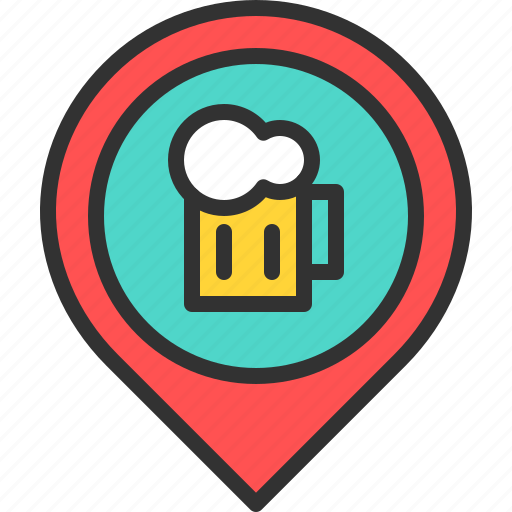

<!DOCTYPE html>
<html>
<head>
    <meta charset="UTF-8">
    <title>MAP</title>
    <style>
        html, body, #map {
            height: 100%;
            margin: 0;
            padding: 0;
        }

        #searchBox {
            position: absolute;
            top: 10px;
            left: 50%;
            transform: translateX(-50%);
            z-index: 1000;
            padding: 6px 12px;
            width: 250px;
            font-size: 14px;
            border: 1px solid #ccc;
            border-radius: 4px;
        }

        #suggestions {
            position: absolute;
            top: 45px;
            left: 50%;
            transform: translateX(-50%);
            z-index: 1001;
            list-style: none;
            padding: 0;
            margin: 0;
            width: 250px;
            background: white;
            border: 1px solid #ccc;
            border-top: none;
            max-height: 150px;
            overflow-y: auto;
            font-size: 14px;
        }

        #suggestions li {
            padding: 6px 12px;
            cursor: pointer;
        }

        #suggestions li:hover {
            background-color: #f0f0f0;
        }


    </style>
    <link rel="stylesheet" href="https://unpkg.com/leaflet/dist/leaflet.css"/>
</head>
<body>
<input type="text" id="searchBox" placeholder="Search for a bar..." />
<ul id="suggestions"></ul>
<div id="map"></div>
<script src="https://unpkg.com/leaflet/dist/leaflet.js"></script>
<script>
    window.addEventListener('load', function () {
        // Initialize Map
        const map = L.map('map').setView([40.7528, -73.4265], 13);

        // Add OpenStreetMap tile
        L.tileLayer('http://{s}.tile.openstreetmap.fr/hot/{z}/{x}/{y}.png', {
            attribution: '&copy; OpenStreetMap contributors'
        }).addTo(map);

        // Default Marker
        L.marker([40.7528, -73.4265]).addTo(map).bindPopup('Farmingdale State College').openPopup();

        // Custom Image Marker
        const imageIcon = L.divIcon({
            html: '',
            className: '',
            iconSize: [32, 32]
        });

        // Helper function to call Java safely
        function updateFromJava(title, description) {
            if (typeof javaBridge !== 'undefined') {
                javaBridge.updateLocation(title, description);
            } else {
                console.warn("javaBridge not ready yet.");
            }
        }

        const markers = [];

        function addBarMarker(coords, name, description) {
            const marker = L.marker(coords, { icon: imageIcon })
                .addTo(map)
                .on('click', function () {
                    updateFromJava(name, description);
                });
            marker.barName = name.toLowerCase(); // for search
            markers.push(marker);
        }

        // Marker with Java bridge click
        addBarMarker([40.7481, -73.4290], "Changing Times Pub!", "Bar & Grill\n1247 Melville Rd, Farmingdale, New York 11735-1302");
        addBarMarker([40.7386, -73.1192], "Oakdale Brew House", "Restaurant\n927a Montauk Hwy, Oakdale, NY 11769");
        addBarMarker([40.8097, -73.1063], "Artemis\n", "Cocktail Bar\n3 Hawkins Ave Unit 1110, Ronkonkoma, NY 11779");
        addBarMarker([40.6624, -73.4240], "Toomey's Tavern", "Brewpub\n251 S Ketcham Ave, Amityville, NY 11701");
        addBarMarker([40.6782, -73.4548], "Johnny McGorey's Pub", "Craft Brewery\n131 Front St, Massapequa Park, NY 11762");
        addBarMarker([40.7328, -73.0886], "Portly Villager", "Taproom\n261 W Main St, Sayville, NY 11782");
        addBarMarker([40.73393, -73.2322], "Destination Unknown Beer Company", "Craft Brewery\n1 S Chicago Ave, Bay Shore, NY 11706");
        addBarMarker([40.7472, -73.0578], "Momos Too Sports Bar & Grill", "Bar\n667 Montauk Hwy, Bayport, NY 11705");
        addBarMarker([40.900136, -73.3535], "Sand City Brewing Company", "Brewery & Taproom\n60 Main St, Northport, NY 11768");

        const searchBox = document.getElementById('searchBox');
        const suggestionsList = document.getElementById('suggestions');

        searchBox.addEventListener('input', function (e) {
            const query = e.target.value.toLowerCase();
            suggestionsList.innerHTML = '';

            if (!query) {
                markers.forEach(marker => marker.setOpacity(1));
                return;
            }

            markers.forEach(marker => {
                if (marker.barName.includes(query)) {
                    marker.setOpacity(1);

                    const li = document.createElement('li');
                    li.textContent = marker.barName;
                    li.addEventListener('click', () => {
                        searchBox.value = marker.barName;
                        suggestionsList.innerHTML = '';
                        map.setView(marker.getLatLng(), 15);
                        marker.fire('click'); // optional: simulate clicking marker
                    });
                    suggestionsList.appendChild(li);
                } else {
                    marker.setOpacity(0.2);
                }
            });
        });

    });

</script>
</body>
</html>
